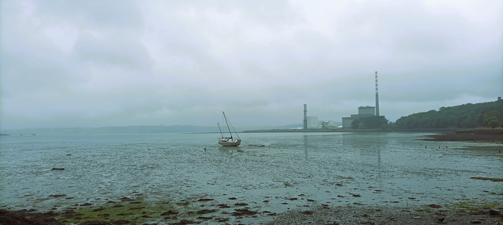
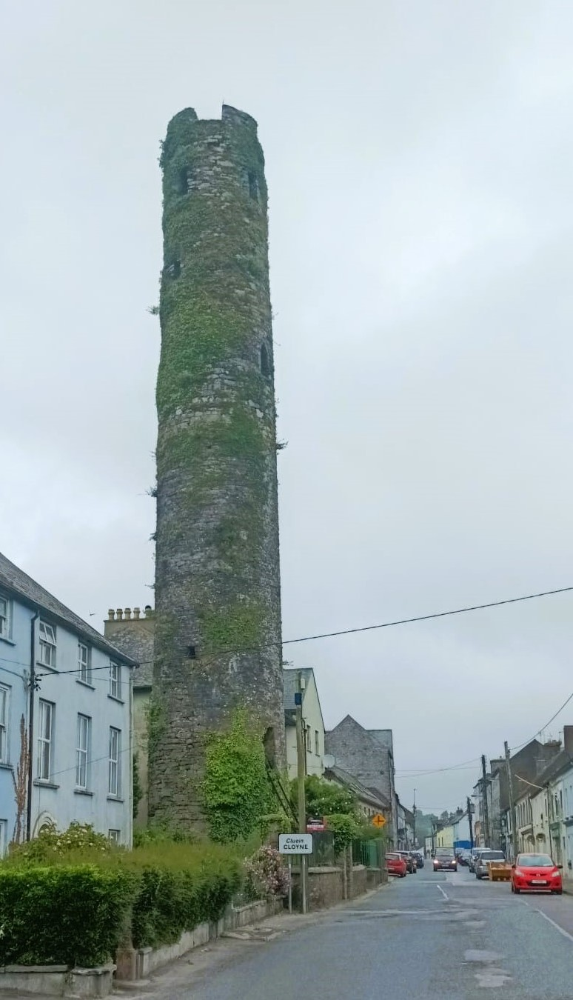
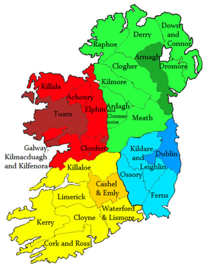
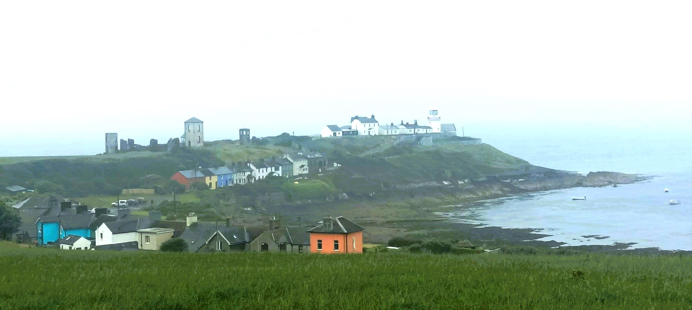

20 Roche’s Point
20.1 Roche’s Point

Because I didn’t make it to Roche’s Point yesterday, day two slash three of our holibops will also be interrupted by Daddy’s urge to cycle. I feel horrenjus guilt about it, but not quite enough to stop me. I was hoping to get upenattem first thing and be back by noon to hang out, but it turns out that today’s weather is a game of two halves. So it was sunshine with the kids in the morning and rain now for the afterneevening. We’re talking yellow weather warning across the south-eastern counties, and East Cork would be included if it was its own county, which it nearly could be. So I load the family into the car, cos there’s no point in them staying in the campsite in this weather, put the bike on the back and we all drive to Ballycotton. I’m just going to cycle 25k to Roche’s Point and they’ll have ice cream à la pluie then come and pick me up.
I was hoping to follow the famous Ballycotton Cliff Walk but I meet some people and they tell me it’s barely safe to walk there today, let along cycle, so I double back and head across country towards Cloyne, a crossroads village where I can turn for Cork Harbour and Roche’s Point. The actual coast road seems to be a bit of an inland jobbie so I’d rather look at the harbour up close. The rain is pissy but constant so I have to take off my shades and now I can feel the wind on my eyes. I forget how much rain pain actually hurts because I wear wraparound Oakleys day and night, making me look like an American cop on holidays. Next time you are out in the howling wind and rain, lash on some wraparound shades and notice how the soak up the bulk of the misery. But I have to take mine off now cos I can’t see the road and it’s way too bumpy to lose any vision. I try and imagine that I’m actually Victor Campanaerts, the Belgian rouleur who never wears glasses, but I’m actually just a plodding dadbod, grinding across the rugged roads of rural Ireland. Absolutely nothing happens along the way, bar of a bit of hedge cutting and one micro-encounter with a overly-groomed lady out for a jog or powerwalk or some kind of self-propelled exercise. She shouts at me, ‘watch out for the bush down there’, but my banter fitness is too low for me to make the obvious wisecrack.
20.1.1 The Bishop of Cloyne

I eventually come to Cloyne where I find a round tower dating from the tenth possibly century. Round the corner a stone mason is getting ready to rebuild the wall around the old Church of Ireland Cathedral I try and soak up some knowls from him but he’s not interested in explaining the minutiae of the task. The most famous Bishop of Cloyne was the famous Irish philosopher, George Berkeley (1685-1753) whose works are still read today by undergrads, including my own mates in Trinnerz who would bang on about his theories of vision on The Ramp and in Grogans. It might seem odd nowadays that a university professor would also be member of the clergy but back then it was mandatory, on taking up a fellowship, to take Holy Orders and abstain from marriage. After writing his best known works, Berkeley hit the Doolittle, first to Italy and later to Bermuda and the American Colonies where he tried to establish a university and, regrettably to modern eyes, kept some slaves. Years later, the American university city of Berkeley would be named after him, as would the largest library in Trinity, although it has since been denamed and we’re still waiting for an update. Zach Halley reckons it should be named after me, given how much time I’ve spent loitering in and around it over the last twenty years.

After all of his galavanting, Berkeley saw out his final seventeen years as Bishop of Cloyne, surrounded by poverty and famine, although seemingly he’d chuck the locals a tenner here and there. It’s not obvious why this village became such a major religious centre. The village feels like the definition of the middle of nowhere, as our friend might put it. It’s clear from the lack of geography why Cloyne is no longer a major population centre. Midleton is a few clicks north of here, connected to Cork Harbour by a river. Ballycotton is a fishing village and its beauty is making it the Kinsale for the squeezed middle. The cathedral for the Catholic Diocese of Cloyne is now in Cobh, which is a major port connecting England to Ireland and the Americas. In all of these cases, the larger settlements connect to the outside world, but in the medieval period, the sizeable island of Ireland must have been an inward-facting world. Cloyne is a natural meeting point for south-east Cork an for whatever reason the diocese expanded to include all of East and North Cork, which is the chunk of the county which modern visitors mostly leapfrog. This suffagen, or provincial, diocese reports inland to the archdiocese of Cashel, which is itself a meeting point for Munster people to converge and engage with the other provinces. Suddenly I want to know where all of the settlements where in medieval Ireland and also how the dioceses map onto the modern counties.
20.1.2 Cork Harbour

I punch on towards Cork Harbour and a long string of roadside, waterside houses that make up the census town of Aghada-Farsid-Rostellan. It strikes me as a less developed version of Warrenpoint where the Newry River opens out to Carlingford Lough, on the northern side. There’s a power station in Aghada with a solitary tower, identical to the ones in Poolbeg, giving the area a Soviet feel, and making me wonder if East Cork is itself a dissident republic within the People’s Republic of Cork, somewhat akin to Transnistria in Moldova. In Whitegate, I’m delighted to see my wife whizz by in the car. I tell her to meet me down by the lighthouse and it’s a few lumpy clicks out to Roche’s Point, which turns out to be minor development of its own.
The area around lighthouse is surprisingly populated, two rows of brightly painted houses nearby, one on the micro-headland which houses the lighthouse and its cottages, and another on the main body of land as you approach. The townland is Trabolgan and not far from here is the Trabolgan holiday park. The estate once belonged to the family of Edmund Rice, who built themselves a tower and session gaff, the ruins of which can be seen to the left of the lighthouse campus. The tower functioned as the original lighthouse, but it wasn’t strong enough so the great George Halpin came in and designed yet another of his sturdy beasts right on the edge of the headland, with seaward views and inland across the huge harbour which I’m looking forward to seeing from the busy side. Getting up to the lighthouse involves scaling a gate so I lash the bike agin the usual CIL gate and head up for a goo. It’s too wet and miserable to hang around so I head back to the family who are huddled in the car, showing zero interest in the surroundings. It’s the kind of day that would put a child off lighthouses for life, so I don’t push it. Then I mount my bike on the back of the car, change into dry clothes and warm up in the passenger seat as my wife drives off in the pissings of Jesus and Mary.